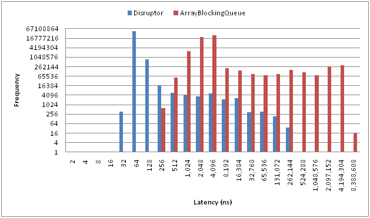

Java程序员都知道，Disruptor是一个高性能的线程间通信的框架，即在同一个JVM进程中的多线程间消息传递,由LMAX开发。
Disruptor性能是如此之高，LMAX利用它可以处理每秒6百万订单，用1微秒的延迟获得吞吐量为100K+。那么Go语言生态圈中有没有这样的库呢？
go-disruptor就是对Java Disruptor的移植,它也提供了与Java Disruptor类似的API设计，使用起来也算不上麻烦。
至于性能呢，下面就会介绍，这也是本文的重点。
因为Disruptor的高性能， 好多人对它都有所关注， 有一系列的文章介绍Disruptor，比如下列的文章和资源：
- Disruptor Google Group
- Bad Concurrency (Michael Barker)
- LMAX (Planet)
- LMAX Exchange
- Disruptor presentation @ QCon SF
- Disruptor Technical Paper
- Mechanical Sympathy (Martin Thompson)
- Martin Fowler's Technical Review
- .NET Disruptor Port
- Introduction to the Disruptor
- Disruptor wiki
也有一些中文的翻译和介绍，比如 并发编程网的Disrutpor专题。
阿里巴巴封仲淹：如何优雅地使用Disruptor。
Disruptor由LMAX开发，LMAX目标是要称为世界上最快的交易平台，为了取得低延迟和高吞吐率的目标，它们不得不开发一套高性能的生产者－消费者的消息框架。Java自己的Queue的性能还是有所延迟的，下图就是Disruptor和JDK ArrayBlockingQueue的性能比较。

X轴显示的是延迟时间，Y轴是操作次数。可以看到Disruptor的延迟小，吞吐率高。
Disruptor有多种使用模型和配置，官方的一些模型的测试结果的链接在这里。
我想做的其实就是go-disruptor和官方的Java Disruptor的性能比较。因为Disruptor有多种配置方式，单生产者和多生产者，单消费者和多消费者，配置的不同性能差别还是蛮大的，所以公平地讲，两者的比较应该使用相同的配置，尽管它们是由不同的编程语言开发的。
我选取的一个测试方案是：3个生产者和一个消费者，如果使用一个生产者Java Disruptor的性能会成倍的提升。
Java Disruptor
Java的测试主类如下：
|
|
生产者和消费者类如下：
|
|
|
|
|
|
生产者使用三个线程去写数据，一个消费者进行处理。生产者运行在三个线程中，批处理写入，每次写16个数据。
实际测试每秒能达到 183486238 的吞吐率， 也就是1.8亿的吞吐率。
go-disruptor
下面看看go-disruptor的性能能达到多少。
我们知道，Go语言内置的goroutine之间的消息传递是通过channel实现的，go-disruptor官方网站上比较了go-disruptor和channel的性能，明显go-disruptor要比channel要好：
| cenario | Per Operation Time |
|---|---|
| Channels: Buffered, Blocking, GOMAXPROCS=1 | 58.6 ns |
| Channels: Buffered, Blocking, GOMAXPROCS=2 | 86.6 ns |
| Channels: Buffered, Blocking, GOMAXPROCS=3, Contended Write | 194 ns |
| Channels: Buffered, Non-blocking, GOMAXPROCS=1 | 26.4 ns |
| Channels: Buffered, Non-blocking, GOMAXPROCS=2 | 29.2 ns |
| Channels: Buffered, Non-blocking, GOMAXPROCS=3, Contended Write | 110 ns |
| Disruptor: Writer, Reserve One | 4.3 ns |
| Disruptor: Writer, Reserve Many | 1.0 ns |
| Disruptor: Writer, Reserve One, Multiple Readers | 4.5 ns |
| Disruptor: Writer, Reserve Many, Multiple Readers | 0.9 ns |
| Disruptor: Writer, Await One | 3.0 ns |
| Disruptor: Writer, Await Many | 0.7 ns |
| Disruptor: SharedWriter, Reserve One | 13.6 ns |
| Disruptor: SharedWriter, Reserve Many | 2.5 ns |
| Disruptor: SharedWriter, Reserve One, Contended Write | 56.9 ns |
| Disruptor: SharedWriter, Reserve Many, Contended Write | 3.1 ns |
在与Java Disruptor相同的测试条件下go-disruptor的性能呢？
下面是测试代码：
|
|
实际测试go-disruptor的每秒的吞吐率达到137931020。
好了，至少我们在相同的测试case情况下得到了两组数据,另外我还做了相同case情况的go channel的测试，所以一共三组数据：
- Java Disruptor : 183486238 ops/s
- go-disruptor : 137931020 ops/s
- go channel : 6995452 ops/s
可以看到go-disruptor的性能要略微低于Java Disruptor,但是也已经足够高了，达到1.4亿/秒，所以它还是值的我们关注的。go channel的性能远远不如前两者。
Go Channel
如果通过Go Channel实现，每秒的吞吐率为 6995452。
代码如下:
|
|